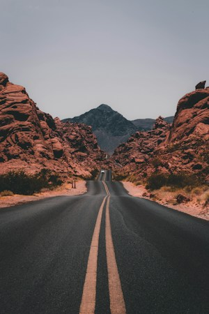
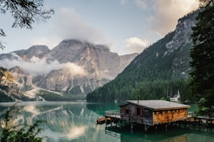
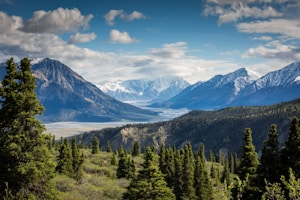
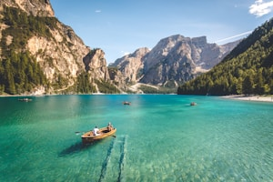

Tempat yang Direkomendasikan untuk Dikunjungi

1
Auckland, Selandia Baru

2
Pantai White, Selandia Baru

3
Gunung Cook, Selandia Baru

4
Sungai Shotover, Otago
Selandia Baru adalah negara kepulauan di barat daya Samudra Pasifik. Negara ini memiliki banyak tempat indah dan pemandangan yang menakjubkan.
Di seluruh negeri yang luar biasa ini, Anda dapat menemukan segala sesuatu mulai dari hutan belantara yang masih alami hingga budaya yang kaya.
Auckland, Selandia Baru
Pantai White, Selandia Baru
Gunung Cook, Selandia Baru
Sungai Shotover, Otago
Selandia Baru memiliki banyak tempat menarik dan destinasi wisata spektakuler yang dapat membuat liburan Anda lebih berharga dan tak terlupakan.
Selandia Baru adalah tanah dengan kontras dan keanekaragaman yang besar. Nikmati pantai indah, pegunungan, danau, dan pemandangan yang menakjubkan.



